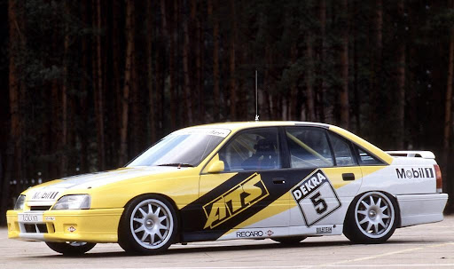
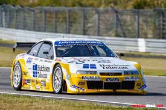

Historia en el DTM
Opel llegó al DTM como el "otro alemán": sin el glamour de Mercedes, sin los recursos de BMW ni la tecnología 4x4 de Audi, pero con una apuesta valiente. El Opel Omega 3000 24V fue el primer coche de la marca en el DTM, a principios de los años 90, con el apoyo del equipo Irmscher.
Pero la verdadera leyenda llegaría con el Opel Calibra V6 4x4. Desarrollado con Cosworth, el Calibra era radicalmente diferente: tracción a las cuatro ruedas, carrocería coupé rompedora y un motor V6 biturbo que en algunas configuraciones superaba los 490 CV. Era el coche más ambicioso técnicamente del paddock.
En 1996, cuando el campeonato pasó a llamarse ITC, el Calibra alcanzó su punto más álgido. Manuel Reuter se proclamó campeón, derrotando a Mercedes y Alfa Romeo. Los enormes costes del campeonato llevarían a Opel a retirarse al año siguiente, dejando un recuerdo imperecedero.
Coches

Opel Omega 3000 24V
1990 - 1993La primera apuesta de Opel en el DTM. Preparado por Irmscher, el Omega 3000 no logró victorias en el campeonato principal pero demostró que Opel podía competir y sentó las bases para el proyecto más ambicioso que vendría después.

Opel Calibra V6 4x4
1993 - 1997El coche más bello y técnicamente avanzado de su época en el DTM/ITC. Diseño de Giugiaro, mecánica de Cosworth, tracción integral permanente y motor V6 biturbo. Una obra de arte sobre el asfalto que ganó el campeonato ITC de 1996 con Manuel Reuter. El favorito de los aficionados.
Pilotos Destacados
Manuel Reuter
Campeón ITC 1996
El alemán de Mainz es el único campeón de la historia del ITC/DTM con un Opel. Su título de 1996 con el Calibra V6 4x4 fue el resultado de años de trabajo desarrollando un coche que muchos consideraban demasiado complejo para ganar. Un logro histórico.
Klaus Niedzwiedz
Piloto emblema 1990-1993
El alemán fue el piloto más importante de la primera etapa de Opel en el DTM, exprimiendo el Omega 3000 a resultados que nadie esperaba. Su profesionalidad allanó el camino para el posterior éxito del Calibra.
Keke Rosberg
Piloto Calibra 1993-1995
El campeón del mundo de F1 de 1982 aportó su enorme experiencia al proyecto Calibra. Su estilo suave y técnico se adaptaba perfectamente a las exigencias de la tracción integral, elevando el nivel y la visibilidad de Opel en el paddock.